2.52: "well glyphghost is still not up and running", frederik said
2.54: "EFFE AFBLIJVEN ALLES WERKT NU!!!" frederik said as nico took place in front of his computer
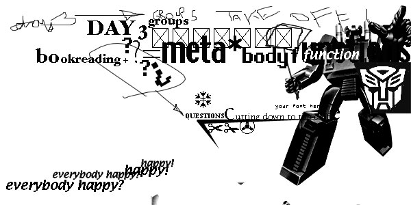
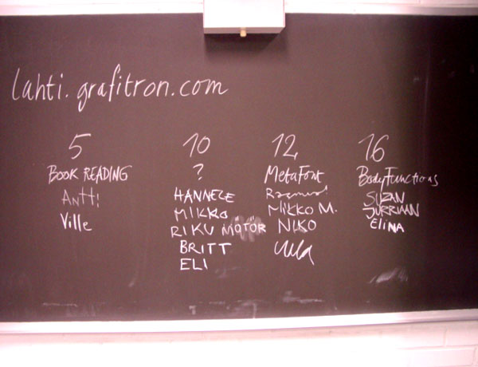
At the end presentation of day 2, the studens were asked to make a list of the projects they themselves liked best. Surprisingly (or, as Lucas always says, not at all surprisingly), the same four toppers kept popping up on almost everyone's list. These four projects would then become the theme or concept an entire group of people would work on during the remainder of the week. In no order whatsoever: the book-reading concept, now rapidly evolving towards "a font that is able to analyse itself, the question mark concept, ?, the metafont concept, a font that contains its own history and connotations, the body functions concept, a font that imitates human automations such as breathing.
---------------------------------------------------------------------------->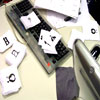
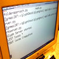
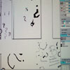
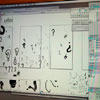
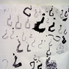
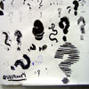
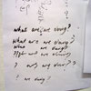
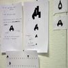
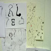
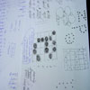
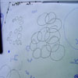
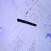
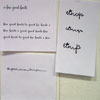
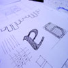
|
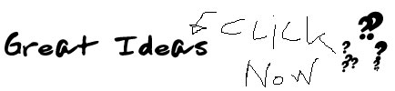 "the ship metaphor" == font that reads itself ==the captain left, but the project lives on! WHY: a book that reads itself is an interesting idea. it has a punch. COMMENTS:
- should it be pixelated == metafont group ==the captain of the ship left too! NAME: loremess / more spacial / less spacial / LORE IS MESS COMMENTS: CODE ELEMENTS FROM KERNKRU: == ? ==automation is supposed to answer questions, CODE ELEMENTS FROM KERNKRU: COMMENTS: Quote: Elenna: "maybe we find the answer, and that's the solution" == bodily functions ==brainstorming sessionwe went on with the parts of the body that are automated forms and characters of the letter that are automated which are important, which are not, group them what can we show in a letter? certain parts of the letter represent certain characteristics of the human body we're trying to visualise it automation of humans <-> automation of letters for each group we made a form in the letter heartbeat, swallowing, and at the same time that would be what it represents in the letter COMMENTS: CODE ELEMENTS FROM KERNKRU: ----------------------------------------------------------------------------> ----------------------------------------------------------------------------> ----------------------------------------------------------------------------> 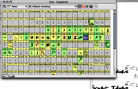 How about that eskimo! 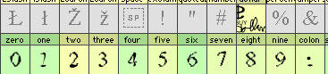 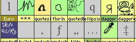 |

Randoman has more news factoids! If you crush snow real hard, you get sand. Then, if you crush sand real hard, you get silicium. So, if you then crush silicium real hard, you get a computer. If you crush a computer real hard, you get Frederik's computer. If you crush Frederik real hard, you get a DrawBot. If you crush DrawBot real hard, you eventually get design. If you crush design real hard, you get a Dryad font. If you crush a dryad real hard maybe it'll snow. Randoman says: Randoman has some new factoids! Glyphghost is up and running, you can see Nico, Frederik, Lucas and Tom designing their crappy(TM) font here.
see a current version of crappyfont 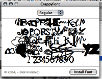 |

We'll be playing some light music along the way... here is some heavenly music, for free!
Lucas was on a roll today. You can see and hear him speeching... |